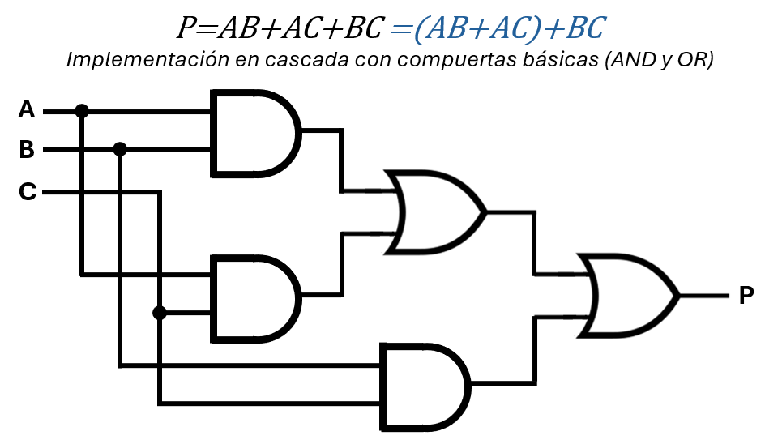
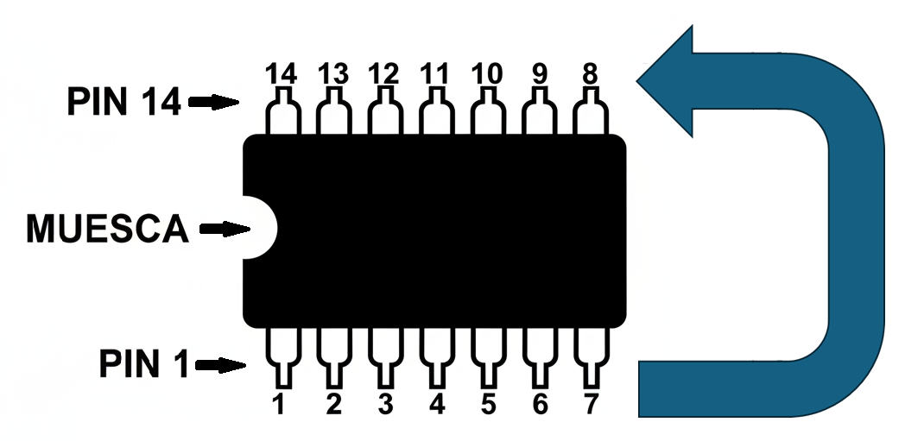
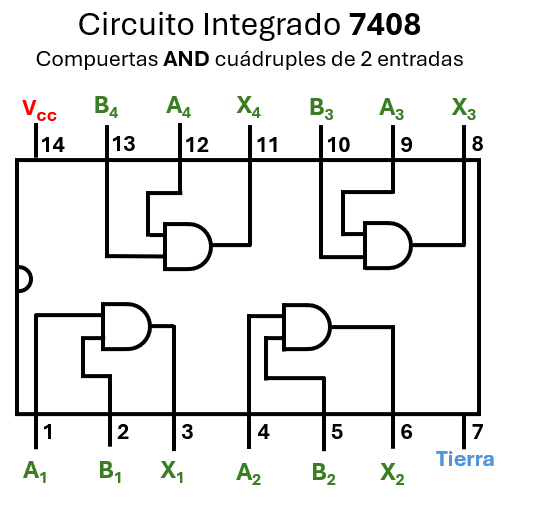
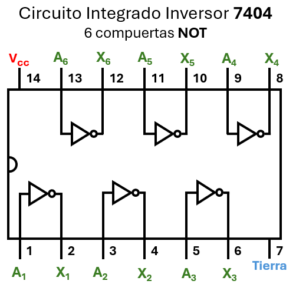
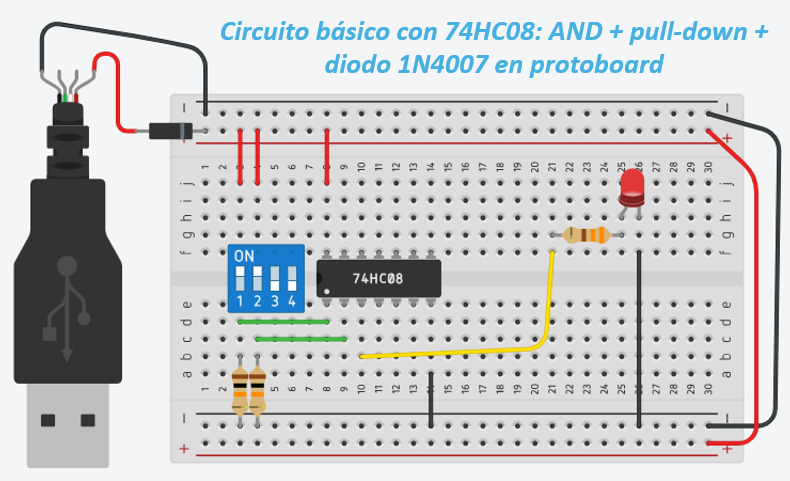
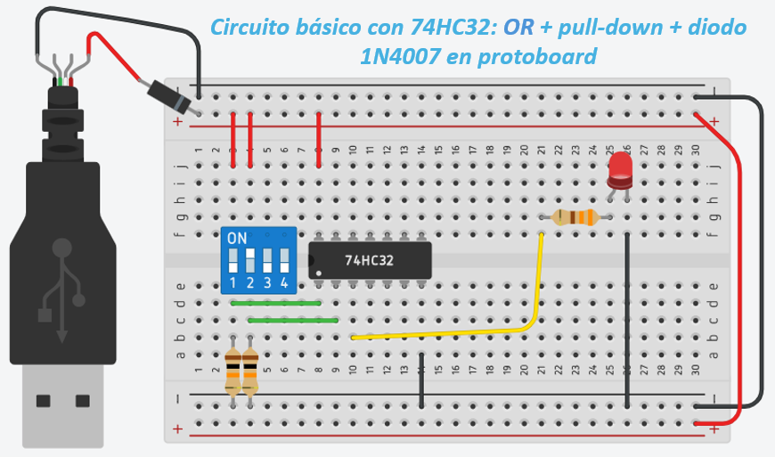
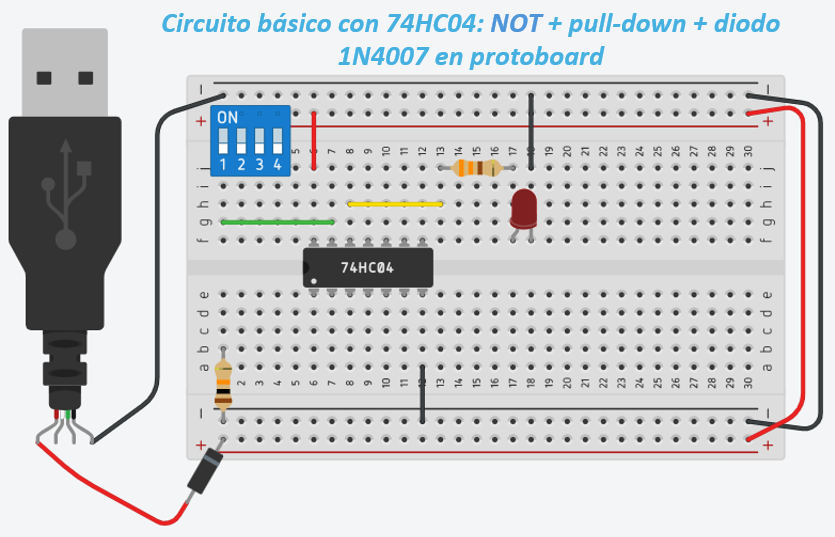
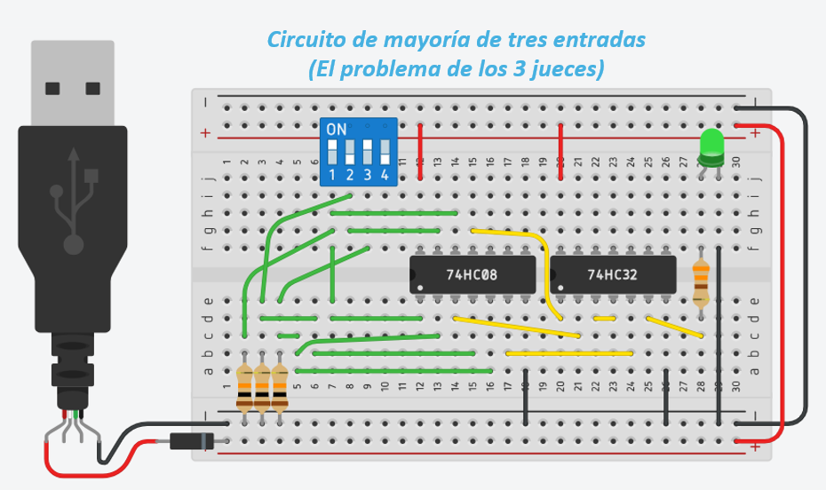

Unidad 2: Lógica Digital - Lección 17
¡Felicidades! Tienes en tus manos el plano perfecto de tu circuito lógico: la ecuación simplificada del Jurado. Pero un plano en papel no enciende luces ni mueve motores. Hoy daremos el gran salto del mundo matemático al mundo físico.
Conoceremos a los verdaderos héroes de los laboratorios de electrónica: los Chips TTL 74xx. Estas pequeñas cajas negras con patas de metal contienen las compuertas lógicas (AND, OR, NOT) que has estado dibujando. ¡Es hora de dejar el lápiz y tomar los cables!
En la lección anterior, usamos los Mapas de Karnaugh para aplastar una ecuación gigante y convertirla en este diseño elegante y barato:
Para sumar tres elementos \((X + Y + Z)\) en el mundo real, la industria no fabrica compuertas de 3 patas. Usamos la propiedad asociativa: sumamos dos, y al resultado le sumamos el tercero usando dos compuertas en cascada.

Antes de tomar los cables, necesitamos ajustar nuestro plano matemático a las limitaciones del mundo físico. En el álgebra de Boole puedes escribir una suma gigante como \(A + B + C\) en una sola línea, pero los componentes electrónicos básicos que utilizaremos solo tienen dos "puertas" de entrada. ¡Aquí es donde el ingeniero usa el truco de la cascada para adaptar la matemática al hardware!
En la lección anterior, simplificamos la ecuación del jurado usando Mapas de Karnaugh:
Esta ecuación era el resultado elegante y barato de aplicar Karnaugh a la tabla de verdad original. Ahora vamos a convertir esta fórmula en un circuito físico real.
Para que sea más fácil de construir y no confundirnos con los cables, escribiremos la ecuación separando muy bien cada pareja (multiplicación) con paréntesis:
Para sumar los tres términos \(X + Y + Z\) usando compuertas físicas de solo 2 entradas, aplicamos la propiedad asociativa: primero sumamos los dos primeros \((X + Y)\), y el resultado de esa primera suma lo inyectamos a una segunda compuerta OR para sumarle el tercer término \(Z\).
Fig. 1: Esquema lógico para P = AB + AC + BC. Implementación en cascada con compuertas básicas (AND y OR). Observa cómo las compuertas OR se encadenan para lograr la suma triple.
Ahora que el plano respeta las leyes de la física, ¿cómo construimos eso? La respuesta está en unos componentes negros con patitas metálicas llamados Circuitos Integrados de la familia TTL (74xx). Cariñosamente les decimos "chips".
Es una pastilla de silicio con miles de transistores adentro. Físicamente, se ven como pequeños bloques rectangulares con dos filas de pines metálicos (por eso se llaman encapsulado DIP: Dual In-line Package).
Para no conectarlos al revés, busca la Muesca (el huequito semicircular). Para usarlos y no quemarlos, lo primero es saber cuál es la pata número 1:

Fig. 2: Pon la muesca a la izquierda. Abajo está el pin 1. Arriba el 14.
Aunque hay miles, estos tres son los reyes del curso:

Fig. 3: Rayos X al 7408. ¡Son 4 en 1!
De forma general, en el chip 7408 (y chips similares como el 7432):
Pin 7: GND (tierra), Pin 14: Vcc (alimentación).
Esta estructura interna es lo que permite usar múltiples compuertas lógicas independientes dentro de un solo encapsulado.

Fig. 4: Chip 7404 – 6 inversores independientes.
La asignación de pines para las 6 compuertas NOT es distinta:
Pin 7: GND (tierra), Pin 14: Vcc (alimentación).
En el mercado verás dos grandes familias de chips: TTL (los nuestros) y CMOS. ¿Por qué elegimos TTL para aprender?
| Característica | TTL (Serie 74LS) | CMOS (Serie 4000) |
|---|---|---|
| Tecnología | Transistores BJT (Viejita pero fuerte) | MOSFET (Moderna y eficiente) |
| Resistencia | 💪 Tanque de Guerra: Aguanta estática y maltrato. | ⚠️ Delicado: Si lo tocas con estática, muere. |
| Voltaje | Estricto 5V | Flexible (3V a 15V)* Serie 4000 |
| Pines al aire | Perdona errores (a veces). | Se vuelve loco y se calienta. |
Veredicto: Para aprender, usamos TTL porque son más resistentes a los errores humanos. ¡Cuando seas un experto, usarás CMOS porque gastan menos batería!
Conexión directa: Nuestra ecuación simplificada P = AB + AC + BC requiere exactamente:
Este es el diseño físico que construiremos en el laboratorio final.
Los chips no funcionan con magia. Si no los conectas a la energía, no hacen nada (o se queman si lo haces mal).
Haz esto PRIMERO, antes de poner cualquier otro cable.
Antes de armar la ecuación gigante del jurado, vamos a probar que la matemática funciona en el mundo real construyendo una sola operación: \(X = A \cdot B\). Usaremos un chip 7408 (Compuerta AND).
1. El regreso del Pull-Down: ¿Recuerdas la Lección 10? Para que el circuito sea intuitivo para un usuario (Interruptor Arriba = 1 Lógico), usamos resistencias Pull-Down conectadas a Tierra.
2. Ergonomía en la Protoboard: Aunque el chip tiene 4 compuertas, usamos la Compuerta 1 (entradas en pines 1 y 2, salida en pin 3). Esto mantiene todos los cables agrupados a la izquierda, facilitando la lectura del circuito y evitando "nidos de espagueti".

Fig. 5: Montaje físico del 7408. Observa cómo las resistencias van a tierra (Pull-Down) y se utilizan los pines 1 (A1), 2 (B1) y 3 (Y1).
Al encender la fuente, el chip 7408 multiplicará constantemente las entradas. El LED (Salida) solo se encenderá cuando subas el interruptor 1 Y el interruptor 2 simultáneamente (\(1 \cdot 1 = 1\)). Si bajas cualquiera de los dos, el LED se apagará (\(1 \cdot 0 = 0\)).
Aquí viene uno de los conceptos más alucinantes de la electrónica digital: La estandarización.
Los ingenieros que diseñaron estos chips se aseguraron de que los pines coincidieran. El chip 7432 (Compuerta OR) tiene exactamente el mismo "plano" (pinout) que el 7408. Sus pines 1 y 2 son entradas, y el pin 3 es salida. Su pin 14 es VCC y el 7 es Tierra.
Si apagas tu fuente de energía, sacas el chip 7408 de la protoboard con cuidado, y en esos mismos agujeros exactos conectas un chip 7432, ¡no tienes que mover ni un solo cable!
Pero al encenderlo, el comportamiento matemático del universo habrá cambiado de una Multiplicación a una Suma (\(X = A + B\)).

Fig. 6: Mismo cableado, diferente "cerebro". Ahora tenemos un sumador lógico.
Comprobando la Suma: Ahora el LED se encenderá si subes el interruptor 1, O si subes el interruptor 2, O si subes ambos. Solo se apagará cuando ambos estén abajo (\(0 + 0 = 0\)).
Hasta ahora hemos puesto un solo chip en el centro de la protoboard porque teníamos mucho espacio. Pero piensa como un arquitecto: si vas a construir un edificio más grande, no puedes poner la primera casa justo en el medio del terreno.
Mira el siguiente montaje de un chip 7404 (Compuerta NOT). Observa cómo hemos movido el interruptor azul y las resistencias Pull-Down lo más a la izquierda posible.

Fig. 7: Montaje Compacto: Todo a la izquierda. Dejamos libre la mitad derecha de la protoboard.
¿Por qué hacemos esto?
En la próxima lección (Lección 18) conoceremos a las "Fuerzas Especiales" de la lógica y construiremos circuitos que requerirán hasta 3 chips diferentes interactuando al mismo tiempo (NOT, AND y OR) en la misma placa. Si eres ordenado desde el principio y agrupas tus entradas a la izquierda, tendrás espacio de sobra para colocar tus chips en fila hacia la derecha. ¡El orden espacial evita cortocircuitos y confusiones!
Una salida de un chip TTL puede alimentar hasta 10 entradas de otros chips TTL (esto se llama "fan-out = 10"). Si intentas conectar más, la señal de voltaje se debilita y el circuito fallará.
En nuestro diseño del jurado, cada salida de AND va a una sola entrada de OR, por lo que estamos dentro del límite seguro.
Ahora que dominas tanto la compuerta AND como la OR por separado, mira nuestra ecuación simplificada del jurado: P = AB + AC + BC. Esta requiere combinar ambos mundos:

Fig. 8: El montaje final con un chip 7408 y un 7432.
Abrir Simulación en Tinkercad ↗
El Problema: Un tribunal nos ha contratado para crear un sistema electrónico de votación. Hay tres jueces (A, B, y C). Cada juez tiene un interruptor. El sistema debe encender una luz verde (P = 1) única y exclusivamente si hay mayoría simple (es decir, si 2 o 3 jueces votan a favor).
Conecta la energía. Si el LED enciende con todo apagado, ¡desconecta rápido y revisa! Si está apagado, es hora de auditar tu circuito contra el contrato del cliente (La Tabla de Verdad).
| Juez C | Juez B | Juez A | ¿Salida Esperada? | Estado de tu LED (Firma) |
|---|---|---|---|---|
| 0 | 0 | 0 | Apagado (0) | [ ] Cumple |
| 0 | 0 | 1 | Apagado (0) | [ ] Cumple |
| 0 | 1 | 0 | Apagado (0) | [ ] Cumple |
| 0 | 1 | 1 | Encendido (1) | [ ] Cumple |
| 1 | 0 | 0 | Apagado (0) | [ ] Cumple |
| 1 | 0 | 1 | Encendido (1) | [ ] Cumple |
| 1 | 1 | 0 | Encendido (1) | [ ] Cumple |
| 1 | 1 | 1 | Encendido (1) | [ ] Cumple |
Imagina que estás preparando una clase para estudiantes que nunca han tocado un chip.
Anota tu estrategia pedagógica en tu cuaderno. Recuerda: haz que ellos visualicen la conexión entre la matemática invisible y el componente físico que tienen en sus manos.
Dos docentes analizan la importancia de los chips TTL 74xx como el puente entre la teoría lógica y la implementación física. Comparten estrategias para enseñar el concepto de "pinout", la estandarización de los pines que permite la "magia modular" entre compuertas AND y OR, y la necesidad absoluta del pull-down para garantizar estados lógicos.
Responde estas preguntas para asegurarte de que dominas los conceptos técnicos y estás listo para enseñarlos en tu futura aula:
Explicación técnica: El Pull-Down ancla la entrada a 0V (estado lógico 0) cuando el interruptor está abierto. Al cerrar el interruptor, la entrada recibe Vcc (estado lógico 1). Esto crea una "Lógica Positiva" donde una acción física (presionar/subir) equivale directamente a un "1" matemático, lo cual es mucho más fácil de razonar mentalmente para un estudiante que la lógica inversa generada por un Pull-Up.
Explicación técnica: Están estandarizados porque comparten el mismo encapsulado (DIP-14), la misma alimentación (Pin 14 Vcc, Pin 7 GND) y la misma distribución de entradas/salidas para sus compuertas cuádruples.
Ventaja pedagógica: Permite a los estudiantes cambiar el tipo de operación matemática (de Multiplicación a Suma) simplemente cambiando la pastilla negra, sin modificar un solo cable. Esto demuestra físicamente que la "lógica" está programada dentro del chip y no en las conexiones externas.
Explicación técnica: Se trata de ergonomía espacial y orden de ruteo. Los pines 1, 2 y 3 corresponden a la Compuerta 1, ubicada en el extremo inferior izquierdo del chip. Al usarlos, todo el cableado (interruptores, resistencias, LED) queda agrupado a la izquierda de la protoboard. Esto evita cruzar cables por encima del chip, deja espacio libre a la derecha para futuros componentes y hace que encontrar errores visuales (troubleshooting) sea mucho más rápido.
Explicación técnica: Los chips TTL utilizan transistores bipolares (BJT) que son verdaderos "tanques de guerra" frente al maltrato físico. Son mucho más tolerantes a la electricidad estática de las manos de los estudiantes y perdonan más los errores de cableado momentáneos. Los chips CMOS, al usar MOSFETs, son extremadamente sensibles a descargas electrostáticas (ESD) y pueden quemarse solo con tocarlos si no se tiene el cuidado adecuado.
Explicación técnica: El "Fan-out" es el número máximo de entradas estándar que puede alimentar la salida de una sola compuerta lógica sin que el nivel de voltaje caiga por debajo del umbral permitido. En la familia TTL estándar, el fan-out suele ser de 10. Si conectas 15 cargas, la corriente se divide tanto que el voltaje de salida caerá (ej. de 5V a 1.5V), entrando en la "Zona Prohibida" o "Zona de Ruido". El circuito se volverá inestable o simplemente dejará de funcionar.
Actividad: "El Arquitecto del Chip"
Objetivo pedagógico: Desmitificar el chip. Mostrarles que la asignación de pines no es magia, sino una distribución espacial lógica diseñada por humanos.
Ya sabes cómo leer un "pinout", dominas la Santísima Trinidad de los chips básicos (AND, OR, NOT) y sabes cómo conectarlos impecablemente agrupándolos a la izquierda de tu protoboard.
Pero, ¿has oído hablar de las "Fuerzas Especiales" de la lógica digital? En la próxima lección conoceremos a las compuertas NAND (7400), NOR (7402), XOR (7486) y XNOR (74266).
Descubrirás cómo una sola compuerta puede reemplazar a una AND y a un NOT trabajando juntas, y exploraremos "la otra cara de la moneda" de las matemáticas: el Producto de Sumas (POS). ¡El arsenal de diseño de ingeniería está a punto de expandirse!